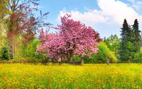
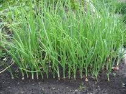
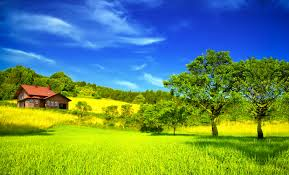
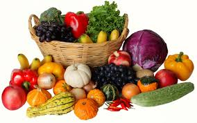
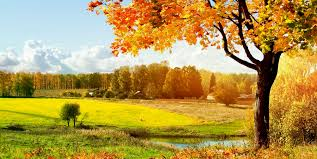
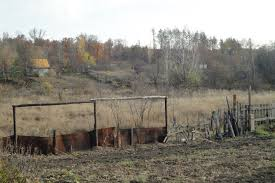
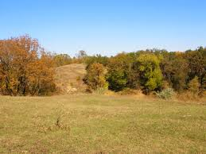
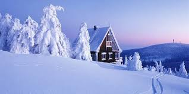
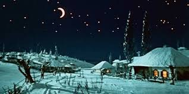

<!-- <!DOCTYPE html>
<html>
    <head>
        <link rel="icon" href="images/favicon.png" sizes="16x16" type="image/png">
        <meta http-equiv="Content-Type" content="text/html; charset=utf-8">
        <title>Зеленые года — О порах года</title>
        <link rel="stylesheet" href="css/index.css">
    </head>

    <nav class="one">
        <ul>
            <li><a href="#">Главная</a></li>
            <li><a href="pages/about.html">О сайте</a></li>
        </ul>
    </nav>

<body>

        <h1>Времена года</h1>

        <div class="seasons">
            <h2>Весна</h2>
            <div class="spring">

                    <p>Время года, следующее за зимой. Весной все расцветает, и не жарко как летом.</p>
                
                <p>Конечно садить деревыя и овощи и др. садить  все надо весной.</p>
                

                <div>
                </div>

                <div class="seasons">
                    <h2>Лето</h2>
                    <div class="summer">
                        <p>Лето-самое тёплое время года, следующее за весной. Летом бывает тепло, а иногда гроза.</p>
                        
                        <p>Как правило летом уже спелые фрукты и овощи ну, а дальше идет <span class="seasons-highlight">осень.</span></p>
                        
                    </div>
                </div>

                <div class="seasons">
                    <h2>Осень</h2>
                    <div class="autumn">
                        <p>Осень-время года, следующее за летом. Осенью бывает зимние угрозы</p>
                        
                        <p>Тогда начинается учебный год. Уже фрукты и овощи на огороде не растут.</p>
                        
                        <p>Бывает жарко, а потом холодно, а потом идет <span class="seasons-highlight">зима.</span></p>
                        
                    </div>
                </div>

                <div class="seasons">
                    <h2>Зима</h2>
                    <div class="winter">
                        <p>Зима-самое холодное время года, следующее за осенью. Зимой бывает снег, не так</p>
                        <p>часто дожди.</p>
                        
                        <p>Зимой бывают праздники а так же Рождество, на этом все.</p>
                        

                    </div>
                </div>

            </div></div>

    <footer>
        <p>Сайт Иустина Чернятевича © 2016 </p>
    </footer>


    </body>
</html>-->